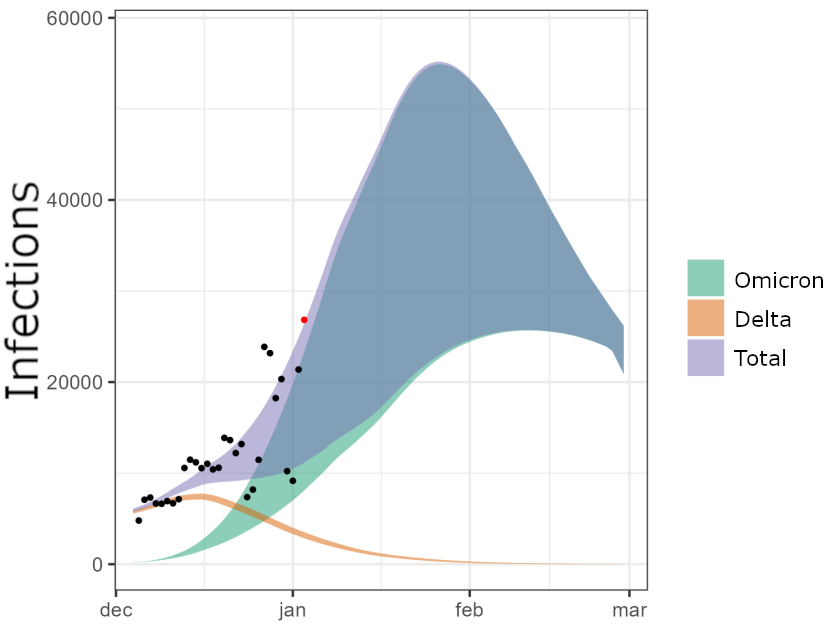

Bielefeld, Germany - August 9th 2022
by Rasmus Kristoffer Pedersen
Postdoc, Mathematical Modelling, Roskilde University
Slides available online: rasmuspedersen.com/talks/BI
Postdoc in applied mathematics at Roskilde University, Denmark.
Ph.D. in mechanism-based mathematical modelling of cancer.
Currently part of the PandemiX research-group, working on COVID-19 as well as historical epidemics.
Multiple public-communication articles related to COVID-19 over the last two years.
Simple ideas about something in the real world
→ Mathematical expression and formulation of the real world
→ Simulations, calculations and mathematical results
→ Insight that (hopefully) apply to the real world
But how does one bring mathematical results back to the real world?
Someone has to interpret the results.
But who? And how?
Mathematical models can make predictions.
However, predictions aren't exact statements about the future.
We can describe a range of possibilities, in exact mathematical terms.

But this "mathematical uncertainty" is not easy to understand.
Article goal: Demonstrate this in a "simple" case.
A "classic" within mathematical modelling.
Describes progression of an epidemic in a population.
Works well for un-mitigated epidemics.
Often described in terms of the "reproduction-number, R0"
"Infectious period"
Interactive graphs are not always the best choice.
Instead, implementing the same ideas in a visual way can be better.
Representing a person in a crowd by a circle, with color showing their status:
Can become infected.
Currently infectious and able to transmit disease to the susceptible.
Immune to infections. (Post-infection or due to vaccination)
Mathematical modelling is based on simple ideas, but the results can be difficult to grasp.
To get an intuitive understanding of mathematical results, simply reading a text is not enough.
This does not only apply to mathematics!
Focus on what is important to communicate,
not just what is easy to show.
Remember: No one has ever complained that a complex topic was too easy to understand!
More examples of interactive visualizations are available on my website:
Web: rasmuspedersen.com
Email: rasmuspedersen1992@gmail.com
Science-communication articles: https://videnskab.dk/author/author/4315
(In Danish, but Google translate might help)